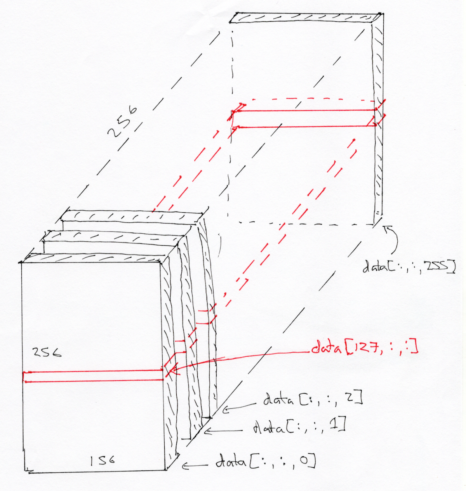

Three-dimensional images, NIfTI
Three-dimensional images, NIfTI#
# Our usual set-up
import numpy as np
import matplotlib.pyplot as plt
# Set 'gray' as the default colormap
plt.rcParams['image.cmap'] = 'gray'
# Display array values to 4 digits of precision
np.set_printoptions(precision=4, suppress=True)
We will spend a lot of time loading data from brain images.
MRI images for functional MRI analysis are usually stored using the NIfTI format.
As you’ve already seen, NIfTI is a very simple format
that is typically a single file with extension .nii. If the file is
compressed, it will end with .nii.gz instead.
Inside, the file contains:
348 bytes of header information. Among other things, the header gives the 3D or 4D shape of the file, and the data type of the pixel (voxel) data.
Usually, directly after the header, we have the image data. If the image data is shape (I, J, K), and S is the number of bytes to store the data for one pixel (voxel) value, then the image data is
I * J * K * Sin length. For example, the image might be shape 64, 64, 32, and the data type might be 64-bit float, which is 8 bytes long, so the image data would be64 * 64 * 32 * 8bytes long.
To load these images into Python, use the Nibabel package.
Start by importing the Nibabel library:
import nibabel as nib
We will use the Nipraxis package to fetch the image data file:
import nipraxis
structural_fname = nipraxis.fetch_file('ds114_sub009_highres.nii')
structural_fname
Downloading file 'ds114_sub009_highres.nii' from 'https://raw.githubusercontent.com/nipraxis/nipraxis-data/0.4/ds114_sub009_highres.nii' to '/home/runner/.cache/nipraxis/0.4'.
'/home/runner/.cache/nipraxis/0.4/ds114_sub009_highres.nii'
Load the image into memory:
img = nib.load(structural_fname)
img
<nibabel.nifti1.Nifti1Image at 0x7fd01013e280>
The image has a “header” containing the information about the image:
print(img.header)
<class 'nibabel.nifti1.Nifti1Header'> object, endian='<'
sizeof_hdr : 348
data_type : b''
db_name : b''
extents : 0
session_error : 0
regular : b'r'
dim_info : 0
dim : [ 3 256 156 256 1 1 1 1]
intent_p1 : 0.0
intent_p2 : 0.0
intent_p3 : 0.0
intent_code : none
datatype : float32
bitpix : 32
slice_start : 0
pixdim : [1. 1. 1.3002 1. 0.0097 0. 0. 0. ]
vox_offset : 0.0
scl_slope : nan
scl_inter : nan
slice_end : 0
slice_code : unknown
xyzt_units : 10
cal_max : 0.0
cal_min : 0.0
slice_duration : 0.0
toffset : 0.0
glmax : 0
glmin : 0
descrip : b'FSL5.0'
aux_file : b''
qform_code : scanner
sform_code : scanner
quatern_b : -0.11747453
quatern_c : 0.008146102
quatern_d : 0.022481605
qoffset_x : -129.82573
qoffset_y : -119.09057
qoffset_z : -143.41777
srow_x : [ 0.9989 -0.0605 0.0109 -129.8257]
srow_y : [ 0.0427 1.263 0.2336 -119.0906]
srow_z : [ -0.0215 -0.3028 0.9723 -143.4178]
intent_name : b''
magic : b'n+1'
If you happen to have the FSL
package installed, you can get the
same information from FSL’s fslinfo. If you do have FSL, run this command
from the terminal:
fslinfo ds114_sub009_highres.nii
It is important to have a clear picture of what we are dealing with.
First, we have the NIfTI file, which is a regular file stored in a hard disk with name ds114_sub009_highres.nii.
In order to access the contents of the file, we invoked NiBabel’s load() function.
The call created a Pyton representation (meaning, a Python object) that is capable of understanding the NIfTI format and therefore access the file.
As an example, we printed out the information contained in the header with NiBabel’s interface.
The interface has other convenience tools to access information about the image, for instance, the shape of the data grid contained by the NIfTI file:
img.shape
(256, 156, 256)
Think of this as 256 2D images, stacked on top of one another. Each 2D image is a “slice”, of shape (256, 156).
At this point, we haven’t accessed yet the actual values that make up this image. Because we haven’t done so yet, NiBabel has not allocated any memory space for it, meaning, data remains sitting in a hard disk and it has not been copied into your RAM (random access memory or fast memory). When you are ready to visualize or analyze the data, you will need to create such a copy into the fast memory of your machine.
Like the img.header property, NiBabel’s representation of NIfTI images offers direct access to the data array through its own property:
img.dataobj
Accessing the data array directly with img.dataobj is generally not recommended.
Instead, we can load the image data directly as an array of floating point numbers with img.get_fdata().
Once loaded, we can confirm that now the values in the NIfTI file have been loaded into memory as a Numpy data array, of data type float64.
data = img.get_fdata()
data.dtype
dtype('float64')
Naturally, we can use all the tooling Numpy offers, for example, to extract summary statistics:
data_mean = np.mean(data)
data_std = np.std(data)
print(f"The mean intensity of this image is {data_mean}, and the standard deviation is {data_std}.")
The mean intensity of this image is 142.68081616574747, and the standard deviation is 279.11470964903845.
To get a sense of what a 2D slice looks like, let’s visualize the middle slice:
middle_slice = data[:, :, img.shape[-1] // 2 - 1]
plt.imshow(middle_slice)
<matplotlib.image.AxesImage at 0x7fcfe1e938e0>
We might be interested to look at the histogram of voxel values in this 3D block.
In order to do that, we np.ravel the 3D volume to 1D, to throw away the spatial arrangement of the voxels.
# Show histogram of the values in the 3D image.
plt.hist(np.ravel(data), bins=100);

At a bird’s eye view, the extremes of the histogram are the most informative bits. On the far end, the histogram extends to very large voxel values (a bit above 3000) with very small voxel counts (just a few voxels that are very bright). On the origin, there’s a massive amount of pixels with zero or almost-zero value (corresponding to the background). Let’s plot the histogram corresponding to values above zero to exclude the very large number of zero-valued voxels, and below 1000 to exclude the scarce voxels with very high values.
# Show histogram of the values in the 3D image, but selecting only voxels
# with values > 0 and < 1000
is_above_0 = data > 0
is_below_1000 = data < 1000
# Combine the two selections with & (True if both are True).
is_both = is_above_0 & is_below_1000
plt.hist(data[is_both], bins=100);

Let us return to the middle slice. As for any array, we can transpose it, to flip the rows and the columns:
plt.imshow(middle_slice.T)
<matplotlib.image.AxesImage at 0x7fcfdfd25b50>
To get the display you usually see in dedicated imaging display software, we need to transpose and flip up to down:
to_display = np.flipud(middle_slice.T)
plt.imshow(to_display)
<matplotlib.image.AxesImage at 0x7fcfdfbf0760>
We are looking at a slice over the third dimension. We will sometimes refer to this as a plane. We can see that the planes are 2D images, where left to right is the first axis, and back to front is the second axis.
As in arrays and 3D, we can think of the 3D image as a stack of planes, where the bottom plane is the first, then the second is the second from bottom, and so on:

We can also think of this 3D image as a stack of 2D images where the 2D images are (back to front, bottom to top), like this:
yz_slice = data[img.shape[0] // 2 - 1, :, :]
yz_slice.shape
(156, 256)
plt.imshow(yz_slice)
<matplotlib.image.AxesImage at 0x7fcfdfb7a760>
Here, we have all the pixels corresponding to 127 in the left to right direction, giving us an image of shape (156, 256).

Here’s a coronal slice:
xz_slice = data[:, 78, :]
xz_slice.shape
(256, 256)
plt.imshow(xz_slice)
<matplotlib.image.AxesImage at 0x7fcfdfaf7b50>

NiBabel’s Python representation of images offers a helpful utility to look at images through three viewplanes, implemented as a function attached to image objects (hence, a method of the object):
img.orthoview()
<OrthoSlicer3D: /home/runner/.cache/nipraxis/0.4/ds114_sub009_highres.nii (256, 156, 256)>